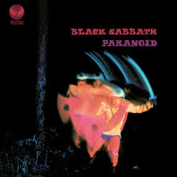

Discografía
Estos son algunos de los álbumes más representativos de esta banda, con enlace directo a YouTube para escuchar el disco completo.
Álbumes Destacados

Black Sabbath (1970)
Un clásico del heavy metal con temas como “Black Sabbath” y “Iron Man”.
Escuchar en YouTube

Paranoid (1970)
Un álbum fundamental que incluye clásicos como “Iron Man” y “War Pigs”.
Escuchar en YouTube
Heaven and Hell (1980)
Un álbum que marcó el inicio de una nueva era para la banda, con la poderosa voz de Ronnie James Dio.
Escuchar en YouTube